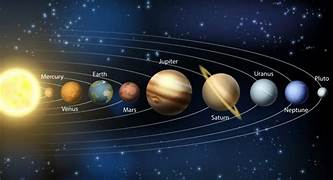

En esta página aprenderás sobre el Sistema Solar, sus planetas y mucho más. ¡Explora y descubre!
El Sistema Solar está formado por el Sol, ocho planetas y otros cuerpos celestes. El Sol es la estrella en el centro, y los planetas giran a su alrededor.
El Sistema Solar tiene ocho planetas: Mercurio, Venus, Tierra, Marte, Júpiter, Saturno, Urano y Neptuno. Cada uno tiene características únicas.